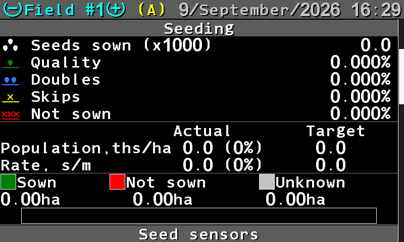

The Statistics screen
The report of the work on each field, block by block and line by line — and the menu that chooses the field, saves the report and erases it.
The Statistics screen is the report of the work: how far you drove, how much you covered, how much you sowed, and how evenly. It is kept separately for each field and survives switching off. Open it with “HOME” from the Table screen (twice from the home screen); leave it with “BACK”.
The report is one long list. Scroll it with “UP” and “DOWN”, or swipe up and down.
The head and the work on the field

- Field number. The field whose report you see. “MINUS” and “PLUS” — or a two-finger swipe — show another field.
- (A). This is the active field — the one the panel writes to now.
- Date and time. Today's date and the time of day.
- Path. Distance driven, in km.
- Area. Area covered, in ha.
- Operating time. Hours, minutes and seconds of work.
- Movement speed. The average travel speed.
- Started / Ended. When the work on this field began and ended.
- Seeding. The next block — see below.
The seeding block

- Seeds sown (x1000). The total, in thousands of seeds.
- Quality. The share of seeds placed singly, as intended. Judge the work by this number.
- Doubles. Two seeds where one was intended.
- Skips. A gap where a seed was intended.
- Not sown. The share of the run when nothing came out at all.
- Actual / Target. What was applied against what was set.
- Population, ths/ha. In thousands per hectare; the deviation in brackets.
- Rate, s/m. In seeds per metre; the target on the right.
- Sown / Not sown / Unknown. The field split three ways, in hectares.
- Bar. The same split as a coloured bar: green sown, red not sown, grey unknown.
- Seed sensors. The next block — section by section.
Unknown is the area driven while the panel could not judge — not a fault, but not proof of work either.
Section by section

- Seed sensors. One block per section follows.
- Seed sensor 1. The section number, and the seeds it counted.
- q d s n. Quality, doubles, skips and not sown for this section.
- Sown / not sown / unknown. The share of each for this section (s, n, ?) and the bar.
- Population. Thousands per hectare for this section, with its deviation.
- Spacing. Seeds per metre for this section, with its deviation.
This is where an uneven drill shows itself. A section with a lower quality than the rest, or a longer red part of its bar, points at that row: a blocked outlet, a worn disk, a sensor that needs cleaning.
Blocks that appear on other machines
| Block | What it holds |
|---|---|
| Work without alarms control | The part of the work the panel was not watching — driven with the control switched off or locked. |
| Speed control | How far and how long you drove outside the permitted speed range. |
| Fertilizing, Liquid fertilizer | Fertilized / not fertilized / unknown, if the machine applies them. |
| Product | For a product applied by weight: the quantity applied, and the actual against the target rate in kg/ha. |

The menu of the screen
Press “MENU”, or tap with two fingers.

| Item | What it does |
|---|---|
| “Select field” | Makes the field shown the active one — the panel writes to it from now on. Shown only while you look at a field that is not active. A field whose statistics are not empty cannot be selected until its data is erased; the panel says so and asks. |
| “Statistics” | Switches the report between short and full. The short report keeps the totals and drops the per-section detail. |
| “Mileage” | Path in km and area in ha over the whole life of the system. These totals cannot be reset. Without a speed sensor, the accumulated running time instead. |
| “Save to SD-card” | Writes one field, or all of them, to the memory card. Shown while a card is in the slot. |
| “Zero statistics” | Erases the statistics. |
Something your machine does that this page does not answer? Write to support@agriwelt.com — an engineer answers.